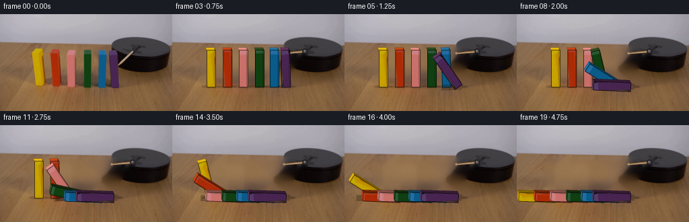
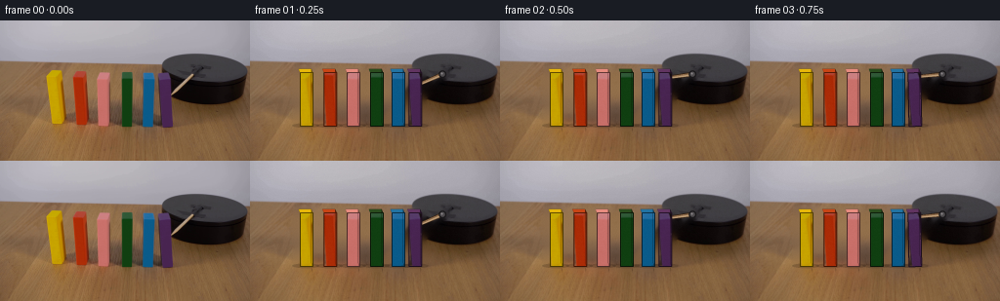

← 本轮 smoke 总览traex/DeepSeek-V4.1-Flash · 0035
text · 256×144 · 4.0 FPS · 20 帧 · 状态 complete · 输出 tokens 50690
原始任务Static locked-off single-shot with fixed frame throughout filmed with constant framerate in real-time. The scene shows a realistic scientific demonstration. The scene only contains the described setup and actions. A row of colorful wooden blocks has been lined up on a wooden table next to a black platform. The wooden stick attached to the black platform rotates clockwise and hits the first block.
当前保存结果
已保存候选与代码修改
这里按时间展示外部捕获的候选，每份均可单独播放。保存新版本不等于完成视觉检查；下方工具证据记录实际看过的图。
候选 01 · 2026-11-08T23:10:03.289051+00:00 · 点开播放与检查图
inspection.png

transition_check.png

代码变化
--- 上一保存版本
+++ 本次保存版本
@@ -0,0 +1,432 @@
+from __future__ import annotations
+
+import math
+from pathlib import Path
+
+import cv2
+import numpy as np
+from PIL import Image, ImageFilter
+
+import artifact_io
+
+
+ROOT = Path(__file__).resolve().parent
+W, H = 256, 144
+FPS = 4
+N_FRAMES = 20
+SS = 3 # Supersampling factor for clean polygon and perspective edges.
+
+
+def smoothstep(value: float) -> float:
+ value = min(1.0, max(0.0, value))
+ return value * value * (3.0 - 2.0 * value)
+
+
+def ease_out(value: float) -> float:
+ value = min(1.0, max(0.0, value))
+ return 1.0 - (1.0 - value) ** 3
+
+
+def make_background(source: np.ndarray) -> np.ndarray:
+ """Remove the moving dominoes and rod, retaining the table and platform."""
+ mask = np.zeros((H, W), np.uint8)
+
+ block_boxes = [
+ (45, 48, 68, 110),
+ (72, 50, 92, 111),
+ (96, 49, 116, 112),
+ (121, 51, 139, 112),
+ (142, 49, 161, 112),
+ (158, 49, 179, 113),
+ ]
+ for x0, y0, x1, y1 in block_boxes:
+ cv2.rectangle(mask, (x0, y0), (x1, y1), 255, -1)
+
+ # Rod and its small attachment shadow.
+ rod_poly = np.array(
+ [[194, 52], [199, 54], [179, 79], [173, 76]], dtype=np.int32
+ )
+ cv2.fillPoly(mask, [rod_poly], 255)
+ cv2.circle(mask, (197, 55), 5, 255, -1)
+
+ # A small dilation catches the antialiased silhouettes and contact shadows.
+ mask = cv2.dilate(mask, np.ones((3, 3), np.uint8), iterations=1)
+ background = cv2.inpaint(source, mask, 3, cv2.INPAINT_TELEA)
+
+ # The tabletop is broad and gently grained. A light guided low-pass removes
+ # Telea streaks in the large erased regions without erasing real texture.
+ smooth = cv2.GaussianBlur(background, (0, 0), 5.0)
+ erased = cv2.GaussianBlur((mask > 0).astype(np.float32), (0, 0), 2.2)
+ erased = np.clip(erased * 0.62, 0.0, 0.62)[..., None]
+ background = background * (1.0 - erased) + smooth * erased
+ return np.clip(background, 0, 255).astype(np.uint8)
+
+
+BLOCK_DATA = [
+ # name, center x, face texture crop, color
+ ("yellow", 57.0, (52, 52, 64, 105), (195, 155, 2)),
+ ("orange", 81.5, (76, 56, 89, 106), (167, 51, 12)),
+ ("pink", 105.0, (100, 54, 112, 107), (195, 116, 109)),
+ ("green", 129.0, (125, 55, 135, 108), (23, 58, 20)),
+ ("blue", 151.0, (147, 54, 157, 108), (16, 93, 140)),
+ ("purple", 168.5, (163, 54, 176, 109), (72, 36, 80)),
+]
+
+
+def build_block_assets(source: np.ndarray):
+ assets = []
+ for name, center, crop, color in BLOCK_DATA:
+ x0, y0, x1, y1 = crop
+ texture = source[y0:y1, x0:x1].copy()
+ texture = cv2.resize(
+ texture, None, fx=SS, fy=SS, interpolation=cv2.INTER_CUBIC
+ )
+ assets.append(
+ {
+ "name": name,
+ "center": center,
+ "texture": texture,
+ "color": np.asarray(color, dtype=np.float32),
+ }
+ )
+ return assets
+
+
+def project_point(
+ x: float,
+ y: float,
+ z: float,
+ center: float,
+ angle: float,
+ ground_y: float,
+) -> tuple[float, float]:
+ """Rotate a point about the domino's bottom edge and project it."""
+ ca, sa = math.cos(angle), math.sin(angle)
+ rx = ca * x - sa * y
+ ry = sa * x + ca * y
+ px = center + rx + 0.22 * z
+ py = ground_y - ry + 0.52 * z
+ return px * SS, py * SS
+
+
+def polygon(points):
+ return np.rint(np.asarray(points, dtype=np.float32) * SS).astype(np.int32)
+
+
+def render_face_texture(
+ canvas: np.ndarray, texture: np.ndarray, dst_quad: np.ndarray
+) -> None:
+ """Perspective-warp a source block face into the current front face."""
+ th, tw = texture.shape[:2]
+ src = np.array(
+ [[0, 0], [tw - 1, 0], [tw - 1, th - 1], [0, th - 1]],
+ dtype=np.float32,
+ )
+ dst = np.asarray(dst_quad, dtype=np.float32)
+ matrix = cv2.getPerspectiveTransform(src, dst)
+ warped = cv2.warpPerspective(
+ texture,
+ matrix,
+ (W * SS, H * SS),
+ flags=cv2.INTER_LINEAR,
+ borderMode=cv2.BORDER_CONSTANT,
+ borderValue=(0, 0, 0),
+ )
+ alpha = cv2.warpPerspective(
+ np.full((th, tw), 255, np.uint8),
+ matrix,
+ (W * SS, H * SS),
+ flags=cv2.INTER_LINEAR,
+ borderMode=cv2.BORDER_CONSTANT,
+ borderValue=0,
+ )
+ alpha_f = (alpha.astype(np.float32) / 255.0)[..., None]
+ canvas[:] = warped.astype(np.float32) * alpha_f + canvas * (1.0 - alpha_f)
+
+
+def draw_shadow(
+ canvas: np.ndarray,
+ center: float,
+ angle: float,
+ height: float,
+ width: float,
+ ground_y: float,
+) -> None:
+ """Draw a soft contact shadow and the shadow cast by a leaning domino."""
+ extent = height * math.sin(angle)
+ tip_x = center - extent
+ tip_y = ground_y - width * 0.35 * math.sin(angle)
+ dx = 3.0 + 2.0 * math.sin(angle)
+ dy = 2.0 + 2.5 * math.sin(angle)
+
+ overlay = canvas.copy()
+ # Shadow thickness follows the block width plus a soft table contact patch.
+ p0 = np.array([center + width * 0.45, ground_y + 1.0])
+ p1 = np.array([tip_x + width * 0.20, tip_y + 1.5])
+ direction = p1 - p0
+ length = max(1.0, float(np.linalg.norm(direction)))
+ perpendicular = np.array([-direction[1], direction[0]]) / length
+ half = (width * 0.58 + 1.2) / 2.0
+ poly = np.array(
+ [
+ p0 - perpendicular * half,
+ p0 + perpendicular * half,
+ p1 + perpendicular * half + (dx, dy),
+ p1 - perpendicular * half + (dx, dy),
+ ],
+ dtype=np.float32,
+ )
+ cv2.fillPoly(
+ overlay,
+ [polygon(poly)],
+ (29, 17, 9),
+ lineType=cv2.LINE_AA,
+ )
+ cv2.ellipse(
+ overlay,
+ (round(center * SS), round((ground_y + 1.0) * SS)),
+ (round((width * 0.85 + 2.5) * SS), round(2.4 * SS)),
+ 0,
+ 0,
+ 360,
+ (28, 17, 10),
+ -1,
+ cv2.LINE_AA,
+ )
+ cv2.addWeighted(
+ overlay,
+ 0.20 + 0.10 * math.sin(angle),
+ canvas,
+ 1.0 - (0.20 + 0.10 * math.sin(angle)),
+ 0,
+ canvas,
+ )
+
+
+def draw_domino(
+ canvas: np.ndarray,
+ asset: dict,
+ angle: float,
+ ground_y: float,
+ width: float,
+ height: float,
+ depth: float,
+) -> None:
+ center = asset["center"]
+ draw_shadow(canvas, center, angle, height, width, ground_y)
+
+ hw, hd = width / 2.0, depth / 2.0
+ # 3D corners, using z positive toward the camera.
+ corners = {
+ "fbl": project_point(-hw, 0, hd, center, angle, ground_y),
+ "fbr": project_point(hw, 0, hd, center, angle, ground_y),
+ "ftr": project_point(hw, height, hd, center, angle, ground_y),
+ "ftl": project_point(-hw, height, hd, center, angle, ground_y),
+ "bbl": project_point(-hw, 0, -hd, center, angle, ground_y),
+ "bbr": project_point(hw, 0, -hd, center, angle, ground_y),
+ "btr": project_point(hw, height, -hd, center, angle, ground_y),
+ "btl": project_point(-hw, height, -hd, center, angle, ground_y),
+ }
+
+ color = asset["color"]
+ top_color = np.clip(color * 1.10 + np.array([18, 14, 9]), 0, 255)
+ side_color = np.clip(color * 0.63 + np.array([8, 5, 3]), 0, 255)
+ edge_color = tuple(int(v) for v in np.clip(color * 0.38, 0, 255))
+
+ # Top and right side provide the small amount of depth visible at this angle.
+ top = np.array(
+ [corners["ftl"], corners["ftr"], corners["btr"], corners["btl"]],
+ dtype=np.int32,
+ )
+ side = np.array(
+ [corners["ftr"], corners["btr"], corners["bbr"], corners["fbr"]],
+ dtype=np.int32,
+ )
+ cv2.fillPoly(canvas, [top], tuple(int(v) for v in top_color), cv2.LINE_AA)
+ cv2.fillPoly(canvas, [side], tuple(int(v) for v in side_color), cv2.LINE_AA)
+
+ front = np.array(
+ [corners["ftl"], corners["ftr"], corners["fbr"], corners["fbl"]],
+ dtype=np.float32,
+ )
+ render_face_texture(canvas, asset["texture"], front)
+
+ thickness = max(1, round(0.55 * SS))
+ cv2.polylines(
+ canvas,
+ [np.rint(front).astype(np.int32)],
+ True,
+ edge_color,
+ thickness,
+ cv2.LINE_AA,
+ )
+ cv2.polylines(
+ canvas,
+ [top],
+ True,
+ tuple(int(v) for v in np.clip(top_color * 0.60, 0, 255)),
+ max(1, thickness - 1),
+ cv2.LINE_AA,
+ )
+ cv2.polylines(
+ canvas,
+ [side],
+ True,
+ tuple(int(v) for v in np.clip(side_color * 0.55, 0, 255)),
+ max(1, thickness - 1),
+ cv2.LINE_AA,
+ )
+
+
+def rod_angle(t: float) -> float:
+ start = math.radians(135.7)
+ finish = math.radians(174.5)
+ u = ease_out((t - 0.10) / 0.66)
+ return start + (finish - start) * u
+
+
+def draw_rod(canvas: np.ndarray, t: float) -> None:
+ pivot = np.array([197.0, 55.0], dtype=np.float32)
+ length = 31.0
+ angle = rod_angle(t)
+ direction = np.array([math.cos(angle), math.sin(angle)], dtype=np.float32)
+ perpendicular = np.array([-direction[1], direction[0]], dtype=np.float32)
+ tip = pivot + direction * length
+
+ def line_polygon(offset: float, half_width: float):
+ a = pivot + perpendicular * offset
+ b = tip + perpendicular * offset
+ return np.array(
+ [
+ a - perpendicular * half_width,
+ a + perpendicular * half_width,
+ b + perpendicular * half_width * 0.65,
+ b - perpendicular * half_width * 0.65,
+ ],
+ dtype=np.float32,
+ )
+
+ # A dark edge, warm wooden body, and narrow upper highlight give the dowel
+ # the same material character as the source frame.
+ cv2.fillPoly(
+ canvas,
+ [polygon(line_polygon(0.0, 2.25))],
+ (48, 32, 20),
+ cv2.LINE_AA,
+ )
+ cv2.fillPoly(
+ canvas,
+ [polygon(line_polygon(-0.15, 1.60))],
+ (142, 107, 74),
+ cv2.LINE_AA,
+ )
+ cv2.fillPoly(
+ canvas,
+ [polygon(line_polygon(-0.65, 0.55))],
+ (190, 158, 121),
+ cv2.LINE_AA,
+ )
+ cv2.circle(
+ canvas,
+ (round(tip[0] * SS), round(tip[1] * SS)),
+ round(1.55 * SS),
+ (175, 145, 111),
+ -1,
+ cv2.LINE_AA,
+ )
+
+ # Small metallic pivot cap at the apparatus.
+ cv2.circle(
+ canvas,
+ (round(pivot[0] * SS), round(pivot[1] * SS)),
+ round(4.1 * SS),
+ (25, 23, 25),
+ -1,
+ cv2.LINE_AA,
+ )
+ cv2.circle(
+ canvas,
+ (round(pivot[0] * SS), round(pivot[1] * SS)),
+ round(2.5 * SS),
+ (79, 76, 78),
+ -1,
+ cv2.LINE_AA,
+ )
+ cv2.circle(
+ canvas,
+ (round((pivot[0] - 0.8) * SS), round((pivot[1] - 0.8) * SS)),
+ round(0.9 * SS),
+ (142, 137, 140),
+ -1,
+ cv2.LINE_AA,
+ )
+
+
+def render_frame(
+ source: np.ndarray,
+ background: np.ndarray,
+ assets: list[dict],
+ frame_index: int,
+) -> np.ndarray:
+ if frame_index == 0:
+ return source.copy()
+
+ t = frame_index / FPS
+ canvas = cv2.resize(
+ background, (W * SS, H * SS), interpolation=cv2.INTER_CUBIC
+ ).astype(np.float32)
+
+ # The rod is attached behind the blocks and in front of the black platform.
+ draw_rod(canvas, t)
+
+ ground_y = 106.6
+ width, height, depth = 13.0, 55.0, 7.0
+ start_times = {
+ "yellow": 3.15,
+ "orange": 2.65,
+ "pink": 2.15,
+ "green": 1.65,
+ "blue": 1.15,
+ "purple": 0.65,
+ }
+ duration = 1.40
+ max_angle = math.radians(88.0)
+
+ # Draw from left to right: the rightmost domino falls onto the others and
+ # therefore remains the top layer of the final pile.
+ for asset in assets:
+ u = (t - start_times[asset["name"]]) / duration
+ angle = max_angle * smoothstep(u)
+ draw_domino(canvas, asset, angle, ground_y, width, height, depth)
+
+ canvas = np.clip(canvas, 0, 255).astype(np.uint8)
+ canvas = cv2.resize(canvas, (W, H), interpolation=cv2.INTER_AREA)
+
+ # A restrained sensor texture avoids synthetic banding while preserving the
+ # static camera and low-resolution source character.
+ rng = np.random.default_rng(3500 + frame_index)
+ noise = rng.normal(0.0, 0.55, (H, W, 1)).repeat(3, axis=2)
+ canvas = np.clip(canvas.astype(np.float32) + noise, 0, 255).astype(np.uint8)
+ return canvas
+
+
+def main() -> None:
+ source = np.array(Image.open(ROOT / "first_frame.png").convert("RGB"))
+ if source.shape != (H, W, 3):
+ raise ValueError(f"Unexpected first-frame shape: {source.shape}")
+
+ background = make_background(source)
+ Image.fromarray(background).save(ROOT / ".tmp" / "background_inpainted.png")
+ assets = build_block_assets(source)
+
+ frames = np.empty((N_FRAMES, H, W, 3), dtype=np.uint8)
+ for index in range(N_FRAMES):
+ frames[index] = render_frame(source, background, assets, index)
+
+ # The contract requires an exactly untouched opening frame.
+ frames[0] = source
+ artifact_io.save(frames, ROOT)
+
+
+if __name__ == "__main__":
+ main()
可观测工具行为
命令 1 · 2026-11-08T23:03:06.517057+00:00/bin/bash -c "pwd && rg --files -g '"'!*.mp4'"' -g '"'!*.mov'"' -g '"'!*.webm'"' | sed -n '1,160p'"
exit 0 命令 2 · 2026-11-08T23:03:06.637494+00:00/bin/bash -c "sed -n '1,240p' prompt.txt"
exit 0 命令 3 · 2026-11-08T23:03:06.853568+00:00/bin/bash -c "sed -n '1,280p' GENERATION_RULES.md"
exit 0 命令 4 · 2026-11-08T23:03:07.064568+00:00/bin/bash -c 'file first_frame.png && identify first_frame.png 2>/dev/null || true && ls -la'
exit 0 命令 5 · 2026-11-08T23:03:17.224988+00:00/bin/bash -c "python3 - <<'PY'
from PIL import Image
import numpy as np
im=np.array(Image.open('first_frame.png').convert('RGB'))
print(im.shape, im.dtype)
print('min/max/mean', im.min((0,1)), im.max((0,1)), im.mean((0,1)))
# dominant exact colors
u,c=np.unique(im.reshape(-1,3),axis=0,return_counts=True)
for i in np.argsort(c)[-30:][::-1]: print(c[i], tuple(u[i]))
PY"exit 0 命令 6 · 2026-11-08T23:03:21.515392+00:00/bin/bash -c "python3 - <<'PY'
from PIL import Image, ImageDraw
im=Image.open('first_frame.png').convert('RGB')
im.resize((1024,576), Image.Resampling.NEAREST).save('.tmp/first_big.png')
# 32px grid enlarged with coordinates, no visual read but aids numerical mapping
PY
sed -n '1,260p' artifact_io.py"exit 0 命令 7 · 2026-11-08T23:03:33.063824+00:00/bin/bash -c "python3 - <<'PY'
from PIL import Image
import numpy as np
from sklearn.cluster import KMeans
im=np.array(Image.open('first_frame.png').convert('RGB'))
# kmeans spatial color clustering, sample all pixels
x=im.reshape(-1,3)
km=KMeans(12, random_state=0, n_init=10).fit(x)
cent=km.cluster_centers_.round().astype(int)
counts=np.bincount(km.labels_)
print('centers/counts')
for i in np.argsort(counts)[::-1]: print(i, tuple(cent[i]), counts[i])
# symbols by brightness/hue manually chars
chars='0123456789AB'
lab=km.labels_.reshape(144,256)
# downsample 4x4 mode
for y in range(0,144,4):
s=''
for x0 in range(0,256,4):
a=lab[y:y+4,x0:x0+4].ravel()
i=np.bincount(a,minlength=12).argmax()
s+=chars[i]
print(f'{y:03d} '+s)
PY"exit 0 命令 8 · 2026-11-08T23:03:42.535704+00:00/bin/bash -c "python3 - <<'PY'
from PIL import Image
import numpy as np
from scipy import ndimage
im=np.array(Image.open('first_frame.png').convert('RGB')).astype(float)
r,g,b=im.transpose(2,0,1)
mx=im.max(2); mn=im.min(2); sat=(mx-mn)/(mx+1e-6)
# saturated components, exclude small anti-aliased
mask=(sat>0.35)&(mx>35)
lab,n=ndimage.label(mask)
print('components')
for i in range(1,n+1):
ys,xs=np.where(lab==i)
if len(xs)>15:
vals=im[ys,xs]
print(len(xs), (xs.min(),ys.min(),xs.max(),ys.max()), 'mean', vals.mean(0).round(1), 'med', np.median(vals,0).round(1))
PY"exit 0 命令 9 · 2026-11-08T23:03:50.741425+00:00/bin/bash -c "python3 - <<'PY'
from PIL import Image
import numpy as np
from scipy import ndimage
im=np.array(Image.open('first_frame.png').convert('RGB')).astype(int)
# centers of kmeans colors, nearest classify
colors=np.array([[130,96,64],[146,110,73],[167,164,173],[183,180,187],[66,57,68],[100,72,47],[16,10,9],[195,155,2],[167,51,12],[195,116,109],[23,58,20],[16,93,140]])
d=((im[:,:,None,:]-colors[None,None,:,:])**2).sum(3)
lab=d.argmin(2)
for i,c in enumerate(colors):
mask=lab==i
ys,xs=np.where(mask)
print(i,tuple(c),len(xs),(xs.min(),ys.min(),xs.max(),ys.max()))
# map each row for color blocks in y 35-110
chars='0123456789AB'
for y in range(35,110,2):
print(f'{y:03d} '+''.join(chars[i] for i in lab[y,::4]))
PY"exit 0 命令 10 · 2026-11-08T23:03:56.033102+00:00/bin/bash -c "python3 - <<'PY'
from PIL import Image
import numpy as np
from scipy import ndimage
im=np.array(Image.open('first_frame.png').convert('RGB')).astype(int)
# print RGB/ascii every 2 pixel in region 20:170, 38:112 via edge / dominant palette chars
colors=np.array([[130,96,64],[146,110,73],[167,164,173],[183,180,187],[66,57,68],[100,72,47],[16,10,9],[195,155,2],[167,51,12],[195,116,109],[23,58,20],[16,93,140]])
# Nearest colors with luminance mapping, render chars (color-specific)
chars='abcdefghijkl'
lab=((im[:,:,None,:]-colors[None,None,:,:])**2).sum(3).argmin(2)
for y in range(38,112,2):
print(f'{y:03d} '+''.join(chars[i] for i in lab[y,20:180:2]))
PY"exit 0 命令 11 · 2026-11-08T23:04:05.434772+00:00/bin/bash -c "python3 - <<'PY'
from PIL import Image
import numpy as np
from scipy import ndimage
im=np.array(Image.open('first_frame.png').convert('RGB')).astype(float)/255
r,g,b=im.transpose(2,0,1)
mx=im.max(2); mn=im.min(2); sat=(mx-mn)/(mx+1e-6)
# hue degrees
h=np.zeros_like(mx)
d=mx-mn+1e-9
q=(mx==r); h[q]=((g[q]-b[q])/d[q])%6
q=(mx==g); h[q]=((b[q]-r[q])/d[q])+2
q=(mx==b); h[q]=((r[q]-g[q])/d[q])+4
h*=60
for name,mask in [
('yellow',(h>38)&(h<65)&(sat>.35)&(mx>.25)),
('red',((h<20)|(h>350))&(sat>.35)&(mx>.2)),
('pink',(h>335)&(h<360)&(sat>.25)&(mx>.35)),
('green',(h>70)&(h<155)&(sat>.3)&(mx>.1)),
('blue',(h>185)&(h<230)&(sat>.35)&(mx>.15)),
('purple',(h>250)&(h<320)&(sat>.25)&(mx>.15)),
('black',(mx<.25)),
]:
lab,n=ndimage.label(mask)
comps=[]
for i in range(1,n+1):
ys,xs=np.where(lab==i)
if len(xs)>=8: comps.append((len(xs),(xs.min(),ys.min(),xs.max(),ys.max()), tuple((im[ys,xs].mean(0)*255).round().astype(int))))
print('\\n',name, sorted(comps,reverse=True)[:12])
PY"exit 0 命令 12 · 2026-11-08T23:04:16.098789+00:00/bin/bash -c "python3 - <<'PY'
from PIL import Image
import numpy as np
im=np.array(Image.open('first_frame.png').convert('RGB')).astype(int)
for y in [44,48,52,56,60,64,68,72,76,80,84,88,92,96,100,104,108,112]:
print('\\ny',y)
# runs classified to nearest dominant saturated color by simple conditions
def cls(p):
r,g,b=p
if max(p)<35:return 'K'
if max(p)-min(p)<25:return 'G' # gray
if b>g and b>r and g>r:return 'B'
if r>g*1.4 and r>b*1.4:return 'R'
if r>100 and g>80 and b<50:return 'Y'
if g>r*1.5 and g>b*1.2:return 'N'
if b>r*1.2 and b>g*1.1:return 'P'
return '.'
s=''.join(cls(p) for p in im[y])
# runs excluding gray
prev=s[0]; st=0
for x,ch in enumerate(s[1:],1):
if ch"'!=prev:
if prev!='"'G' or x-st>=5: print(st,x-1,prev, 'mean',tuple(im[y,st:x].mean(0).round().astype(int)))
st=x;prev=ch
if prev"'!='"'G' or len(s)-st>=5: print(st,len(s)-1,prev,'mean',tuple(im[y,st:].mean(0).round().astype(int)))
PY"exit 0 命令 13 · 2026-11-08T23:04:30.083635+00:00/bin/bash -c "python3 - <<'PY'
from PIL import Image
import numpy as np
im=np.array(Image.open('first_frame.png').convert('RGB')).astype(int)
# hand palette + characters by nearest RGB, show right region at 1 char / 2x1 px, 2 rows y per line
colors=np.array([[130,96,64],[146,110,73],[167,164,173],[183,180,187],[66,57,68],[100,72,47],[16,10,9],[195,155,2],[167,51,12],[195,116,109],[23,58,20],[16,93,140],[72,36,80]])
chars='wWgGsbKORPNBp'
lab=((im[:,:,None,:]-colors[None,None,:,:])**2).sum(3).argmin(2)
for y in range(34,116,2):
# sample x 145-255 step1 and collapse pair most significant by selecting center row; print one char/pixel
print(f'{y:03d} '+''.join(chars[lab[y,x]] for x in range(145,256)))
PY"exit 0 命令 14 · 2026-11-08T23:04:35.566066+00:00/bin/bash -c "python3 - <<'PY'
from PIL import Image
import numpy as np
im=np.array(Image.open('first_frame.png').convert('RGB')).astype(float)
# Output line of RGB at key points and scan black rect edges
for y in [44,46,48,50,52,56,60,64,68,72,76,80,84,88,92,96,100,104,108]:
# intervals max<40
m=im[y].max(1)<45
xs=np.flatnonzero(m)
if len(xs):
starts=np.r_[xs[0],xs[1:][np.diff(xs)>1]]; ends=np.r_[xs[:-1][np.diff(xs)>1],xs[-1]]
print(y,list(zip(starts,ends)))
print('points')
for y,x in [(60,180),(70,200),(75,220),(80,200),(90,200),(96,200),(100,180),(50,200),(44,190),(55,170),(65,170),(75,170),(90,170),(100,170)]:print(x,y,im[y,x].astype(int))
PY"exit 0 命令 15 · 2026-11-08T23:04:46.128824+00:00/bin/bash -c "python3 - <<'PY'
try:
import cv2; print('cv2',cv2.__version__)
except Exception as e: print('no cv2',e)
try:
import scipy; print('scipy',scipy.__version__)
except Exception as e: print(e)
PY"exit 0 命令 16 · 2026-11-08T23:04:51.729623+00:00/bin/bash -c "python3 - <<'PY'
from PIL import Image
import numpy as np
from scipy import ndimage
im=np.array(Image.open('first_frame.png').convert('RGB')).astype(int)
# region crop sample points around apparatus, inspect structure via nearest-neighbor enlarged PPM? no visual.
# Identify dark pixels bounding box and row fill intervals using threshold <50
for th in [25,40,60,80]:
m=im.max(2)<th
ys,xs=np.where(m)
print('th',th,'n',len(xs),'bbox',(xs.min(),ys.min(),xs.max(),ys.max()))
# connected components dark
m=im.max(2)<60
lab,n=ndimage.label(m)
for i in range(1,n+1):
ys,xs=np.where(lab==i)
if len(xs)>20: print(len(xs),(xs.min(),ys.min(),xs.max(),ys.max()),im[ys,xs].mean(0).round().astype(int))
PY"exit 0 命令 17 · 2026-11-08T23:05:02.917848+00:00/bin/bash -c "python3 - <<'PY'
from PIL import Image
import numpy as np
im=np.array(Image.open('first_frame.png').convert('RGB')).astype(int)
# crop x155:256 y40:115; show each pixel? downsample 1x1 to chars based on color classes, two x per char maybe.
# classify background wood/gray, black, saturated blocks, purple, etc
for y in range(40,116):
s=''
for x in range(155,256):
r,g,b=im[y,x]
if max(r,g,b)<45: c='#'
elif max(r,g,b)<80 and abs(r-g)<15 and abs(g-b)<15: c='k'
elif b>r*1.18 and b>g*1.05 and r<120: c='p'
elif b>g*1.3 and b>r*1.2: c='B'
elif g>r*1.2 and g>b*1.2: c='N'
elif r>g*1.3 and r>b*1.5: c='R'
elif r>g*1.15 and g>b*1.2: c='Y'
elif max(r,g,b)-min(r,g,b)<28 and max(r,g,b)<110: c='d'
elif max(r,g,b)-min(r,g,b)<28: c='g'
elif r>100 and g>80: c='w'
else: c='.'
s+=c
print(f'{y:03d} {s}')
PY"exit 0 命令 18 · 2026-11-08T23:05:19.909725+00:00/bin/bash -c "python3 - <<'PY'
from PIL import Image
import numpy as np
im=np.array(Image.open('first_frame.png').convert('RGB')).astype(int)
# print RGB values every 2x2 in apparatus region compressed by letter mapping based on intensity + hue
# intensity chars
ch=' .:-=+*#%@'
for y in range(44,88):
s=''
for x in range(155,256):
r,g,b=im[y,x]
# hue letters for saturation pixels; else intensity
mx=max(r,g,b);mn=min(r,g,b);sat=mx-mn
if sat>50 and mx>50:
if b>r*1.15 and b>g*1.1: c='P'
elif b>g*1.2 and b>r*1.2: c='B'
elif g>r*1.2 and g>b*1.2: c='G'
elif r>g*1.3 and r>b*1.3: c='R'
elif r>g*1.05 and g>b*1.2: c='Y'
else: c='o'
else: c=ch[min(9,mx//28)]
s+=c
print(f'{y:03d} {s}')
PY"exit 0 命令 19 · 2026-11-08T23:05:24.266471+00:00/bin/bash -c "python3 - <<'PY'
from PIL import Image
import numpy as np
im=np.array(Image.open('first_frame.png').convert('RGB')).astype(int)
# hand classify apparatus: inspect colors in x160-250 y40-90, list most common exact
reg=im[40:90,155:256]
u,c=np.unique(reg.reshape(-1,3),axis=0,return_counts=True)
for i in np.argsort(c)[-40:][::-1]: print(c[i],tuple(u[i]))
PY"exit 0 命令 20 · 2026-11-08T23:05:28.761839+00:00/bin/bash -c "python3 - <<'PY'
from PIL import Image
import numpy as np
im=np.array(Image.open('first_frame.png').convert('RGB')).astype(int)
# sample lines along apparatus at several rows: exact RGB run-length compressed for x160:255
for y in [44,46,48,50,52,54,56,58,60,62,64,66,68,70,72,74,76,78,80,82,84,86]:
vals=[]; st=160; prev=tuple(im[y,160])
for x in range(161,256):
cur=tuple(im[y,x])
if max(abs(cur[i]-prev[i]) for i in range(3))>8:
if x-st>=2: vals.append((st,x-1,prev))
st=x;prev=cur
if 256-st>=2:vals.append((st,255,prev))
print('y',y,vals)
PY"exit 0 命令 21 · 2026-11-08T23:05:45.478245+00:00/bin/bash -c "python3 - <<'PY'
from PIL import Image
import numpy as np
im=np.array(Image.open('first_frame.png').convert('RGB')).astype(int)
# classify small apparatus x172:207 y48:88
for y in range(48,88):
s=''
for x in range(172,208):
r,g,b=im[y,x]
if max(r,g,b)<25: c='#'
elif max(r,g,b)<45: c='k'
elif max(r,g,b)<80 and abs(r-g)<12 and abs(g-b)<15: c='d'
elif b>r*1.15 and b>g*1.05 and r<120: c='P'
elif r>g*1.15 and g>b*1.25: c='Y'
elif r>g*1.25 and r>b*1.5: c='R'
elif r>100 and g>80 and b>60: c='w'
elif max(r,g,b)-min(r,g,b)<30: c='g'
else: c='.'
s+=c
print(f'{y:03d} {s}')
PY"exit 0 命令 22 · 2026-11-08T23:06:10.174185+00:00/bin/bash -c "python3 - <<'PY'
from PIL import Image
import numpy as np
im=np.array(Image.open('first_frame.png').convert('RGB')).astype(int)
for y in range(45,90):
xs=[]
for x in range(172,220):
r,g,b=im[y,x]
# wood/tan pixels significantly warmer/brighter than platform
if r>60 and g>45 and r>g*1.05 and g>b*1.15:
xs.append(x)
if xs:
# runs
st=xs[0];pr=xs[0];out=[]
for x in xs[1:]:
if x>pr+1:out.append((st,pr));st=x
pr=x
out.append((st,pr))
print(y,out)
PY"exit 0 命令 23 · 2026-11-08T23:06:14.895199+00:00/bin/bash -c "python3 - <<'PY'
from PIL import Image
import numpy as np
im=np.array(Image.open('first_frame.png').convert('RGB')).astype(int)
# print source RGB exact in rod polygon centerline; detect rod using warm on dark
for y in range(54,77):
# pick x with max r-g? or specific warm threshold in 172:200
x=172+np.argmax((im[y,172:200,0]-im[y,172:200,2]) + .2*im[y,172:200,0])
print(y,x,tuple(im[y,x]))
PY"exit 0 命令 24 · 2026-11-08T23:06:19.964291+00:00/bin/bash -c "python3 - <<'PY'
from PIL import Image
import numpy as np
im=np.array(Image.open('first_frame.png').convert('RGB')).astype(int)
# inspect alpha? format
from PIL import Image
img=Image.open('first_frame.png')
print(img.mode,img.size,img.info)
# print all metadata
print(img.getexif())
PY"exit 0 命令 25 · 2026-11-08T23:06:24.648605+00:00/bin/bash -c "python3 - <<'PY'
from PIL import Image
import numpy as np
im=np.array(Image.open('first_frame.png').convert('RGB')).astype(int)
# blocks y range and surface dimensions by color threshold
colors={'yellow':np.array([195,155,2]),'orange':np.array([167,51,12]),'pink':np.array([195,116,109]),'green':np.array([23,58,20]),'blue':np.array([16,93,140]),'purple':np.array([72,36,80])}
for name,c in colors.items():
d=np.sqrt(((im-c)**2).sum(2))
m=d<45
ys,xs=np.where(m)
print(name, 'bbox', (xs.min(),ys.min(),xs.max(),ys.max()),'n',len(xs))
for y in range(50,110,10):
x=np.flatnonzero(m[y]);
if len(x): print(' ',y,(x.min(),x.max()),len(x))
PY"exit 0 命令 26 · 2026-11-08T23:06:30.281450+00:00/bin/bash -c "python3 - <<'PY'
from PIL import Image
import numpy as np
im=np.array(Image.open('first_frame.png').convert('RGB')).astype(int)
# hand classify exact six color cores. print per-row intervals based closest center dist threshold strict
colors={'Y':np.array([195,155,2]),'O':np.array([167,51,12]),'P':np.array([195,116,109]),'G':np.array([23,58,20]),'B':np.array([16,93,140]),'U':np.array([72,36,80])}
for y in range(40,112):
out=[]
for k,c in colors.items():
d=np.sqrt(((im[y]-c)**2).sum(1))
xs=np.flatnonzero(d<38)
if len(xs):
# groups
st=xs[0];pr=xs[0]
for x in xs[1:]:
if x>pr+1:
if pr-st>=2:out.append((k,st,pr))
st=x
pr=x
if pr-st>=2:out.append((k,st,pr))
if out: print(y,out)
PY"exit 0 命令 27 · 2026-11-08T23:06:35.480137+00:00/bin/bash -c "python3 - <<'PY'
from PIL import Image
import numpy as np
im=np.array(Image.open('first_frame.png').convert('RGB')).astype(float)
# find gray region top edge as a function x: max intensity transitions at y35-50
for x in range(120,256,8):
col=im[:,x]
ys=np.where((col.max(1)>120)&(col.max(1)-col.min(1)<35))[0]
print(x, ys[:5].tolist(), ys[-5:].tolist() if len(ys) else [])
PY"exit 0 命令 28 · 2026-11-08T23:06:40.165324+00:00/bin/bash -c "python3 - <<'PY'
from PIL import Image
import numpy as np
im=np.array(Image.open('first_frame.png').convert('RGB')).astype(int)
# Print wood color sampled, then row texture variability to recreate surface
for y in [45,46,47,100,104,108,112,120,130,140]:
print(y, 'median',np.median(im[y],0), 'mean',im[y].mean(0).round(), 'min',im[y].min(0),'max',im[y].max(0))
print('samples')
for x,y in [(10,50),(100,50),(20,70),(20,90),(40,110),(100,120),(200,120),(250,120),(20,140),(200,140),(10,10),(100,10),(200,10),(250,20)]:print((x,y),im[y,x])
PY"exit 0 命令 29 · 2026-11-08T23:06:45.779152+00:00/bin/bash -c "python3 - <<'PY'
from PIL import Image
import numpy as np
im=np.array(Image.open('first_frame.png').convert('RGB')).astype(int)
for x in [0,10,20,40,60,80,100,120,140,160,180,200,220,240,255]:
print('\\nx',x)
# runs down y 35-115 compressed rough class
s=''
for y in range(35,116):
r,g,b=im[y,x]
if max(r,g,b)<45:c='#'
elif b>r*1.2 and b>g*1.1:c='P'
elif g>r*1.2 and g>b*1.2:c='N'
elif b>g*1.2 and b>r*1.2:c='B'
elif r>g*1.3 and r>b*1.5:c='R'
elif r>g*1.1 and g>b*1.15:c='Y'
elif max(r,g,b)-min(r,g,b)<30:c='g'
else:c='.'
s+=c
print(s)
PY"exit 0 命令 30 · 2026-11-08T23:06:51.088594+00:00/bin/bash -c "python3 - <<'PY'
from PIL import Image
import numpy as np
im=np.array(Image.open('first_frame.png').convert('RGB')).astype(int)
# RGB around block x boundaries and top / bottom y boundaries, several rows
for y in [42,43,44,45,46,47,48,49,50,51,52,53,54,55,56,57,58,59,60,62,64,66,70,75,80,85,90,95,100,103,104,105,106,107,108,109,110]:
print(y, ' '.join(f'{x}:{tuple(im[y,x])}' for x in [28,29,30,31,32,33,34,35,36,45,46,47,66,67,68,69,70,71,72,73,74,75,89,90,91,92,93,94,95,96,97,98,99,100,111,112,113,114,115,116,117,118,119,120,121,122,123,124,125,126,127,128,129,130,131,132,133,134,135,136,137,138,139,140,141,142,143,144,145,146,147,148,149,150,151,152,153,154,155,156,157,158,159,160,161,162,163,164,165,166,167,168,169,170,171,172,173,174,175,176,177,178,179,180,181,182,183,184,185,186,187,188,189,190,191,192,193,194,195,196,197,198,199,200]))
PY"exit 0 命令 31 · 2026-11-08T23:06:56.318899+00:00/bin/bash -c "python3 - <<'PY'
from PIL import Image
import numpy as np
im=np.array(Image.open('first_frame.png').convert('RGB')).astype(int)
for y in range(35,112):
# print pixel colors at x around each block boundaries perhaps row's regions
s=''
for x in range(0,180,2):
r,g,b=im[y,x:x+2].mean(0)
if max(r,g,b)<40:c='#'
elif max(r,g,b)-min(r,g,b)<25 and max(r,g,b)<120:c='d'
elif b>r*1.2 and b>g*1.1:c='P'
elif g>r*1.2 and g>b*1.2:c='N'
elif b>g*1.2 and b>r*1.2:c='B'
elif r>g*1.3 and r>b*1.5:c='R'
elif r>g*1.05 and g>b*1.2:c='Y'
elif r>g*1.2 and g>b*1.1:c='O'
else:c='.'
s+=c
print(f'{y:03d} {s}')
PY"exit 0 命令 32 · 2026-11-08T23:10:01.590730+00:00/bin/bash -c 'python3 generate.py'
exit 0 命令 33 · 2026-11-08T23:10:06.540149+00:00/bin/bash -c "python3 - <<'PY'
from PIL import Image
import numpy as np
src=np.array(Image.open('first_frame.png').convert('RGB'))
frames=np.load('pixels.npz')['pixels']
# decode packed pixels for direct checks
dec=np.stack([(frames>>16)&255,(frames>>8)&255,frames&255],axis=-1).transpose(2,0,1,3)
print('shape',dec.shape,'first identical',np.array_equal(dec[0],src))
for i in [1,2,3,4,5,6,7,8,9,10,11,12,13,14,15,16,17,18,19]:
d=np.abs(dec[i].astype(int)-dec[i-1].astype(int))
print(i,'changed',np.any(d>0,axis=2).sum(),'mean diff',d.mean().round(2))
PY
ls -lh pixels.npz index.html inspection.png transition_check.png frames | sed -n '1,30p'"exit 0 命令 34 · 2026-11-08T23:10:17.311088+00:00/bin/bash -c "python3 - <<'PY'
from PIL import Image
import numpy as np
from scipy import ndimage
colors={'Y':(195,155,2),'O':(167,51,12),'P':(195,116,109),'G':(23,58,20),'B':(16,93,140),'U':(72,36,80)}
for i in [0,1,2,3,4,5,6,8,10,12,15,19]:
im=np.array(Image.open(f'frames/{i:02d}.png').convert('RGB')).astype(int)
print('\\nframe',i)
for k,c in colors.items():
d=np.sqrt(((im-np.array(c))**2).sum(2))
m=d<42
ys,xs=np.where(m)
if len(xs)>20:
# PCA angle and centroid
pts=np.c_[xs,ys]; ctr=pts.mean(0)
cov=np.cov(pts-ctr,rowvar=False); vals,vecs=np.linalg.eigh(cov); v=vecs[:,np.argmax(vals)]
ang=np.degrees(np.arctan2(v[1],v[0]))
print(k,len(xs),'cent',tuple(ctr.round(1)),'bbox',(xs.min(),ys.min(),xs.max(),ys.max()),'ang',round(ang,1))
PY"exit 0 命令 35 · 2026-11-08T23:10:22.172549+00:00/bin/bash -c "python3 - <<'PY'
from PIL import Image
import numpy as np
im=np.array(Image.open('frames/10.png').convert('RGB'))
# print region as color-class coarse map at 2x2 to see silhouettes
for y in range(42,120,2):
s=''
for x in range(20,210,2):
r,g,b=im[y:y+2,x:x+2].mean(0)
if max(r,g,b)<45:c='#'
elif b>r*1.2 and b>g*1.1 and r<120:c='U'
elif b>g*1.2 and b>r*1.2:c='B'
elif g>r*1.2 and g>b*1.2:c='N'
elif r>g*1.3 and r>b*1.5:c='R'
elif r>g*1.05 and g>b*1.2:c='Y'
elif max(r,g,b)-min(r,g,b)<28:c='g'
else:c='.'
s+=c
print(f'{y:03d} {s}')
PY"exit 1 命令 36 · 2026-11-08T23:10:28.103066+00:00/bin/bash -c "python3 - <<'PY'
from PIL import Image
import numpy as np
im=np.array(Image.open('frames/10.png').convert('RGB'))
for y in range(42,120,2):
s=''
for x in range(20,210,2):
r,g,b=im[y:y+2,x:x+2].mean((0,1))
if max(r,g,b)<45:c='#'
elif b>r*1.2 and b>g*1.1 and r<120:c='U'
elif b>g*1.2 and b>r*1.2:c='B'
elif g>r*1.2 and g>b*1.2:c='N'
elif r>g*1.3 and r>b*1.5:c='R'
elif r>g*1.05 and g>b*1.2:c='Y'
elif max(r,g,b)-min(r,g,b)<28:c='g'
else:c='.'
s+=c
print(f'{y:03d} {s}')
PY"exit 0 命令 37 · 2026-11-08T23:10:33.337083+00:00/bin/bash -c "python3 - <<'PY'
from PIL import Image
import numpy as np
for i in range(20):
im=np.array(Image.open(f'frames/{i:02d}.png').convert('RGB')).astype(int)
# compare upper background to source, detect any unwanted artifacts
src=np.array(Image.open('first_frame.png').convert('RGB')).astype(int)
d=np.abs(im-src).mean(2)
print(i,'topdiff',d[:40].mean().round(2),'table diff',d[115:].mean().round(2),'scene mean',im.mean().round(2))
PY"exit 0 命令 38 · 2026-11-08T23:10:37.962358+00:00/bin/bash -c "python3 - <<'PY'
from PIL import Image
import numpy as np
im=np.array(Image.open('frames/19.png').convert('RGB'))
# classify final row at y110 and row y100 runs by threshold nearest to block palette after removing wood
colors=np.array([[195,155,2],[167,51,12],[195,116,109],[23,58,20],[16,93,140],[72,36,80]])
chars='YOPGBU'
for y in [96,98,100,102,104,106,108,110,112,114]:
lab=((im[y,:,None,:]-colors[None,:,:])**2).sum(2).argmin(1)
print(y,''.join(chars[i] for i in lab[::4]))
PY"exit 0 命令 39 · 2026-11-08T23:10:42.465301+00:00/bin/bash -c "python3 - <<'PY'
from PIL import Image
import numpy as np
im=np.array(Image.open('frames/19.png').convert('RGB')).astype(int)
# actual row means in 4 px runs at y 104 and inspect image visually via ascii brightness
for y in [90,95,100,104,108,112,116]:
print('y',y)
for x in range(0,180,8):
c=im[y,x:x+8].mean(0).round().astype(int)
print(x,tuple(c),end='; ')
print()
PY"exit 0 命令 40 · 2026-11-08T23:11:10.798101+00:00/bin/bash -c "pwd && ls -lh && ls -lh frames | sed -n '1,30p'"
exit 0 命令 41 · 2026-11-08T23:11:10.987488+00:00/bin/bash -c "sed -n '1,260p' generate.py"
exit 0 命令 42 · 2026-11-08T23:11:11.284042+00:00/bin/bash -c "cat GENERATION_RULES.md && printf '\\n---PROMPT---\\n' && cat prompt.txt"
exit 0 命令 43 · 2026-11-08T23:11:15.096860+00:00/bin/bash -c "sed -n '261,560p' generate.py"
exit 0 保存候选 1 份；完成命令 43 次；可验证图片返回 0 张。原始 API 响应与完整日志保留在本地。